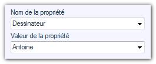
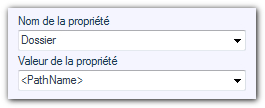

Opération possible sur les pièces, les assemblages ou les mises en plan. 
Cette opération permet d'ajouter ou de modifier, du document parcouru, la propriété spécifiée.
Exemple :
Ajout de la propriété "Dessinateur" avec la valeur "Antoine", si elle existe déjà elle sera modifiée.

Vous pouvez utiliser certaines instructions codées.
<FileName> pour afficher le nom du document.
<PathName> pour afficher le chemin complet de sauvegarde du document.
$Nom de la propriété pour afficher une valeur de propriété du document (si le nom de la propriété contient un espace, utiliser %20% pour remplacer cet espace).
<Configuration> pour afficher le nom de la configuration active du document.
<Date> pour afficher la date.
<Time> pour afficher l'heure.
<NewLine> pour passer à la ligne.
Exemple :
L'opération consiste ici à créer la propriété "Dossier" en récupérant le répertoire courant du document parcouru.

 BIEN RESPECTER LA CASSE
BIEN RESPECTER LA CASSE